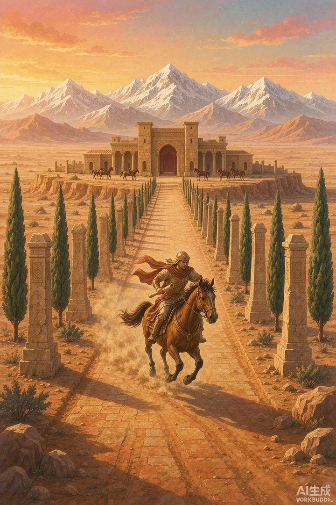
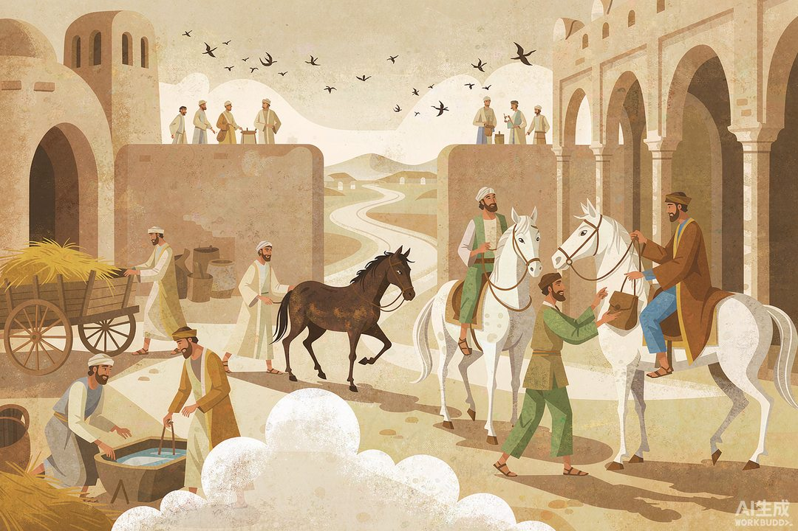

|
信息传播那些事儿 · 卷一 信息的黎明 · 第 14 篇 |
|
波斯御道：人类第一条"信息高速公路" —— 国王的命令，七天跑完两千七百公里 |

▲ 波斯信使沿御道飞驰，远处的驿站已备好快马（AI 生成示意图）
|
烽火再快，也只能喊一嗓子"狼来了"，装不下一份完整的公文。要统治一个横跨三大洲的帝国，波斯人给出的答案是笨办法也是最狠的办法：修路。一条路，111 个驿站，让国王的消息比风还快——快到两千年后的电报才追上它。 |
上一站我们看见，烽火能把警报在一昼夜里送出六百多公里，但它天生是个"只能喊不能聊"的系统——烟柱里塞不进一句话的细节。国家要运转，光有警报不够，还得有政令、税册、军报、账本，日复一日地在帝国的血管里流动。
公元前 6 世纪末，波斯帝国的大流士一世决定正面硬刚这个问题。他治下的帝国从埃及一直铺到印度河边，三四十个省，说几十种语言。这么大的摊子，靠什么捏在一起？答案不是大军，而是一条路。
一 | 基建狂魔的代表作 |
这条路的主体，叫波斯御道：从帝国行政心脏苏萨出发，一路向西，跨过底格里斯河、幼发拉底河，翻过扎格罗斯山脉，穿过整个安纳托利亚高原，终点是小亚细亚西端的萨迪斯——全程约 2699 公里，差不多是北京到广州的距离。
有意思的是，大流士并不是白手起家。考古学家发现，御道西段走的正是老亚述帝国的旧商路——大流士干的事，是把分散的、年久失修的旧路整合翻新，统一路基标准，再拉出来的这张总里程 8000 到 13000 公里、连接 70 多个聚居区的道路网。这套路数今天的你一定眼熟：先有的路不值钱，把路连成网、定好标准，才是真基建。工程质量好到什么程度？土耳其迪亚巴克尔至今还留着一座御道古桥，部分路基一路用到了罗马时代。
但真正让这条路封神的，不是路面，而是沿路的服务区。希罗多德记下了数字：沿线 111 个驿站，平均每 25 到 30 公里一座，刚好是一人一马一天的标准行程。每座驿站常备快马、骑手、粮草和客房——帝国版的高速服务区，只是里面跑的不是货车，是消息。

▲ 驿站交卸：信袋交到新骑手手上，累垮的马牵去休整，消息不停（AI 生成示意图）
二 | 换马不换消息 |
这套接力系统，波斯人自己叫它 pirradaziš，希腊人记作 angareion，翻译过来就是"快马邮驿"。规则简单到粗暴：信使骑到驿站，信袋交给早已备好新马的新骑手，立刻出发。人歇马歇，消息不歇——每一段都全速冲刺，把整条路跑成了接力赛。
效果有多夸张？对比一下就明白。一个单独赶路的骑手，一天拼命也就跑 50 公里上下；希腊步兵大军的标准行军速度，一天约 24 公里。而御道上的接力信使，平均一天能推进 290 到 370 公里——是单骑的六七倍，是大军的十几倍。从苏萨到萨迪斯，普通人步行要走三个月，王家信使只要 7 天。
这个速度是什么概念？直到 19 世纪电报发明之前，地球上没有任何信息系统能跑赢它。也就是说，波斯御道保持了约两千三百年的"地表最快信息速度"纪录。而且它专属王家，私人想用？门都没有——这是帝国最核心的战略资产，相当于把"国家骨干网"直接攥在国王手里。
对统治者来说，这笔账特别划算：爱琴海边的小亚细亚要是有人谋反，消息 7 天到王座，命令再 7 天回去。而叛乱者组织第二次行动怎么也得个把月——国王的信息跑了两趟，叛军连第一波都还没组织好。信息的时间差，就是统治的时间差。
三 | 一句名言，刻了两千年 |
希腊历史学家希罗多德把这套系统写进了《历史》，原话大意是："无论雨雪、酷热，还是黑夜，都阻挡不了这些信差以最快的速度完成他们的行程。"他被波斯的对手们恨得牙痒，却心服口服地给波斯邮政打了差评都打不出的高分。
更妙的是这句话的后世漂流：两千多年后，它被刻在了美国纽约市邮政总局的大门上，成了全球邮政业的座右铭。一套公元前 5 世纪的波斯快递系统，就这么给自己在纽约留了个"分店招牌"。
御道带来的不只是快，还有"标准"。大流士顺手统一了帝国货币、度量衡和公文语言（行政公文统一用亚拉姆文，从尼罗河写到印度河都认）——跑在路上的每份文书盖着王家印章，驿站兼着客栈、税站和关卡。道路成了帝国行政的流水线：信息在路上标准化，帝国才谈得上标准化。这已经非常接近现代"平台"的定义了：路是基础设施，驿站是节点，公文格式是协议，王家印章是鉴权。
▲ 御道翻山过河，像一条虚线把帝国串在一起（AI 生成示意图）
四 | 帝国半径定律 |
把波斯御道和上一站的中国故事放一起看，一个规律浮出水面：一个政权能管多大地盘，不取决于军队跑多快，而取决于信息跑多快。学者们后来给这类现象起过各种名字，我们可以叫它"帝国半径定律"——统治半径 = 信息速度 × 响应能力。
波斯人算得很精：军队 90 天的行程，消息 7 天就能打个来回。前方是战是和、税收多少、总督忠不忠，国王永远比地方快一步。罗马人接手这条路继续用，后来的丝绸之路西段也压在它的路基上——一条为政令修的路，最后顺手成了文明交换的动脉，香料、织物和思想都在上面跑过。
还有个流传千古的彩蛋：有人问数学家欧几里得，学几何有没有捷径？欧几里得回了一句："这世上没有通往几何学的波斯御道。"——连大数学家都拿这条路当"快"的天花板。不过，路修得再好，御道上的信息也只属于国王一个人。在希腊，另一群人发明了截然相反的玩法：不修路、不设驿，把消息摆在大广场上，天天让全城人围观。下一站，去雅典和罗马的广场听听那片鼎沸人声。
|
数字锚点 · 波斯御道 | |||||||||||||||
| |||||||||||||||
|
🔔 下篇预告 · 第 15 篇《罗马广场喊话》——波斯的快只给国王独享，希腊罗马偏要把消息摊开给全城人看。广场就是电视台，演讲就是直播，公告栏就是热搜榜。公共空间怎么成了古代最强的媒体终端？ |
史料转引：希罗多德《历史》关于波斯御道与驿传制度（angareion）的记载；大流士一世时期御道考古研究与波斯波利斯行政文书研究；纽约邮政总局门楣铭文。配图为 AI 生成示意图。